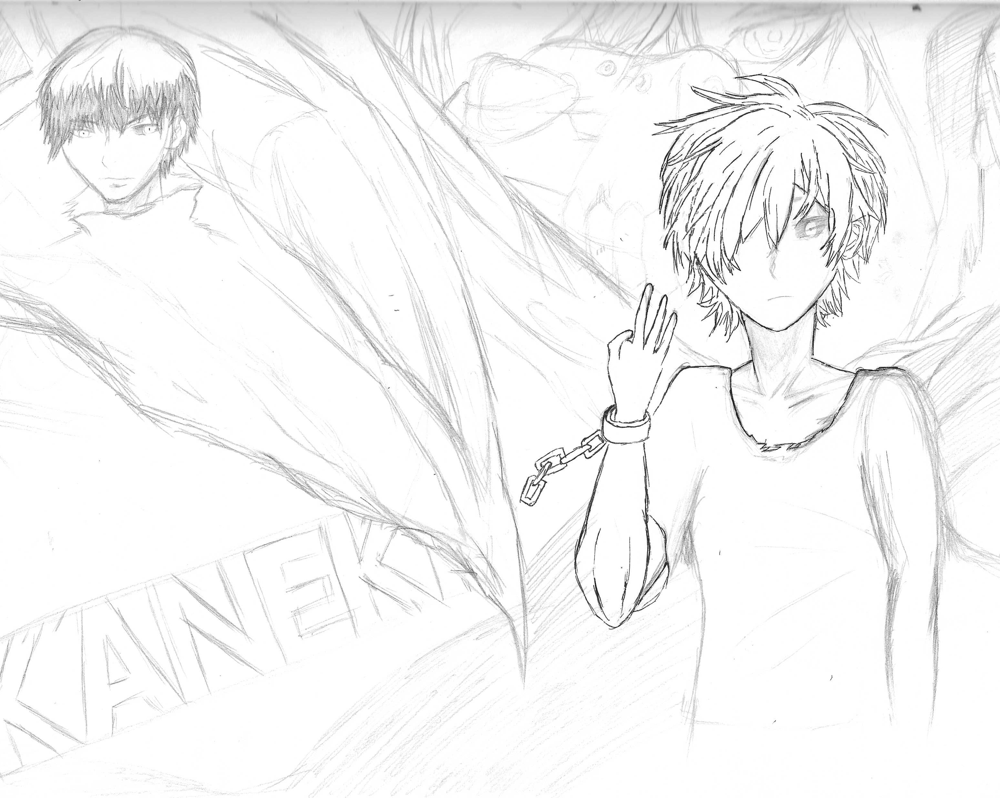
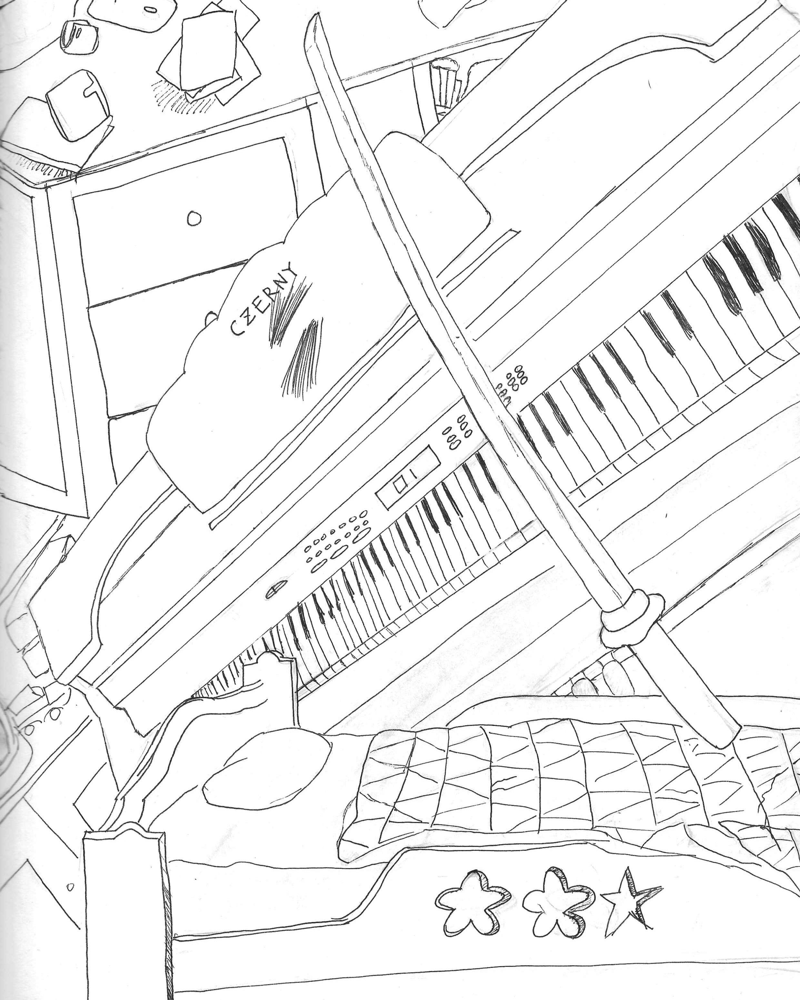
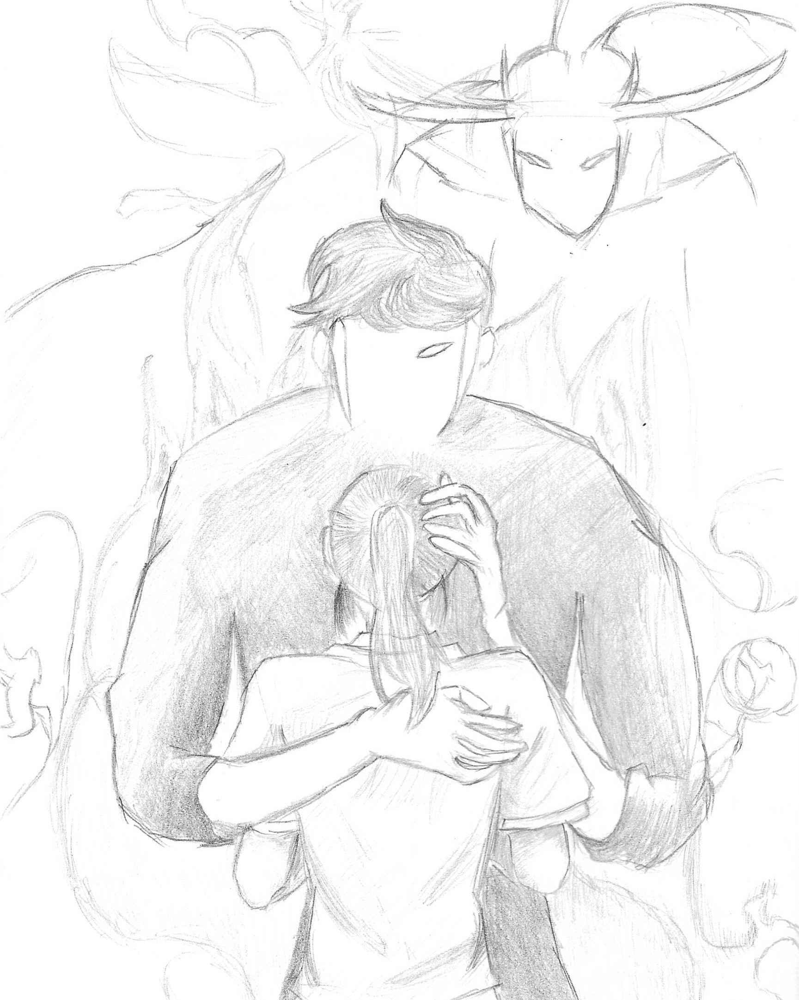

정령왕 엘퀴네스 - 엘뤼엔 그림을 그린지 4개월 차에 그린 그림이다. 가장 잘 그려졌다고 생각한 작품이다. 달링 인 더 프랑키스 - 002 중학생때 가장 흥미롭게 본 메카닉물이다. 나쁜 친구로만 보였던 캐릭터가 환하게 웃는모습이 아름다워서 그렸다.  도쿄구울 - 카네키 켄 중2병과 같이 보낸 애니매니션 캐릭터이다. 중2병 그 자체라 마음에 들어 따라그리게 되었다.  내 방 중1때 글미을 배우고 그린 작품이다. 가장 엉성하고 서투르지만 중학생의 추억이 가득 담겨있다.  나 혼자만 레벨업 - 성진우 고등학생때 그린 그림이다. 그림을 자주 그리지 않아 실력이 많이 죽었던 탓인지 다른 그림보다 퀄리티가 좋지는 않다. 하지만 내 최애 애니매이션이기 때문에 추가해보았다. ◀ ▶